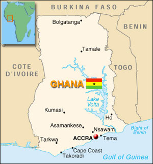
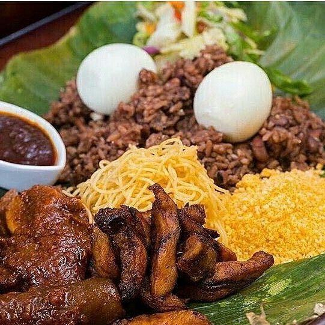

This is the Homepage of my ITMD 361 Project.
My name is David Ngige. I am currently a 4th Year Computer Science student.
I was born in Accra, the capital of Ghana.
The official language of Ghana is English. However, there are over a dozen different dialects/langauges spoken. My mother's side of the family is from Akropong Akuapem, a town in the Easter Region. And since I was born and raised in Ghana, I speak Akuapem Twi (Ch-wee).
Akuapem Twi is simply one of the many dialects of the Akan language. Each region has their own version. Each with a rich history.
My Nigerian connection is thanks to my Father. Our family comes from the South-Eastern part of Nigeria.
Unfortunately, I did not grow up around my Nigerian family so I speak little to no Igbo (e-bow). Even with that, I am in contact with my family there and I love them everytime I visit.
Also, favorite food is Waakye (Waa-ch-ey), a Ghanaian dish.
Head over to the More about me page to find out about my likes and hobbies.